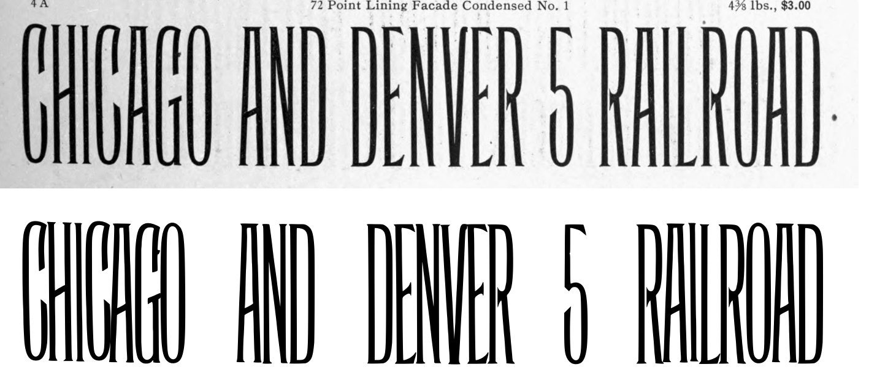
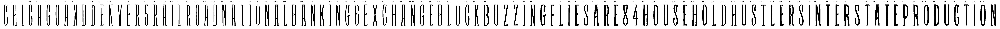

Gray letters are constructed, not traced.


0 warnings, 12 notes.
[
{
"level": "info",
"check": "pieces",
"glyph": "D.72pt",
"value": 2,
"note": "the cut joined more than one ink component"
},
{
"level": "info",
"check": "specks",
"glyph": "E",
"value": 1,
"note": "marks beside the letter were recorded, not cut"
},
{
"level": "info",
"check": "specks",
"glyph": "E.72pt",
"value": 1,
"note": "marks beside the letter were recorded, not cut"
},
{
"level": "info",
"check": "pieces",
"glyph": "R.72pt_2",
"value": 2,
"note": "the cut joined more than one ink component"
},
{
"level": "info",
"check": "specks",
"glyph": "A.60pt",
"value": 1,
"note": "marks beside the letter were recorded, not cut"
},
{
"level": "info",
"check": "specks",
"glyph": "T",
"value": 1,
"note": "marks beside the letter were recorded, not cut"
},
{
"level": "info",
"check": "specks",
"glyph": "G.60pt",
"value": 1,
"note": "marks beside the letter were recorded, not cut"
},
{
"level": "info",
"check": "pieces",
"glyph": "G.60pt",
"value": 2,
"note": "the cut joined more than one ink component"
},
{
"level": "info",
"check": "specks",
"glyph": "E.30pt",
"value": 1,
"note": "marks beside the letter were recorded, not cut"
},
{
"level": "info",
"check": "specks",
"glyph": "S.30pt",
"value": 1,
"note": "marks beside the letter were recorded, not cut"
},
{
"level": "info",
"check": "specks",
"glyph": "T.30pt_2",
"value": 1,
"note": "marks beside the letter were recorded, not cut"
},
{
"level": "info",
"check": "unlabeled_band",
"leaf": 321,
"band": 4,
"note": "reading says: not type"
}
]
{
"321:72pt": {
"n_caps": 24,
"cap_height_px": 380.0,
"cap_source": "caps",
"baseline_px": 3515.0,
"baselines": {
"8": 3515.0
},
"glyphs": [
"C",
"H",
"I",
"C.72pt",
"A",
"G",
"O",
"A.72pt",
"N",
"D",
"D.72pt",
"E",
"N.72pt",
"V",
"E.72pt",
"R",
"five",
"R.72pt",
"A.72pt_2",
"I.72pt",
"L",
"R.72pt_2",
"O.72pt",
"A.72pt_3",
"D.72pt_2"
],
"figure_height_px": 381,
"stem_px": 15.0,
"scale": 1.84211,
"stem_units": 27.6,
"figure_height": 702
},
"321:60pt": {
"n_caps": 28,
"cap_height_px": 317.0,
"cap_source": "caps",
"baseline_px": 2940.5,
"baselines": {
"7": 2940.5
},
"glyphs": [
"N.60pt",
"A.60pt",
"T",
"I.60pt",
"O.60pt",
"N.60pt_2",
"A.60pt_2",
"L.60pt",
"B",
"A.60pt_3",
"N.60pt_3",
"K",
"I.60pt_2",
"N.60pt_4",
"G.60pt",
"six",
"E.60pt",
"X",
"C.60pt",
"H.60pt",
"A.60pt_4",
"N.60pt_5",
"G.60pt_2",
"E.60pt_2",
"B.60pt",
"L.60pt_2",
"O.60pt_2",
"C.60pt_2",
"K.60pt"
],
"figure_height_px": 320,
"stem_px": 14.0,
"scale": 2.2082,
"stem_units": 30.9,
"figure_height": 707
},
"321:48pt": {
"n_caps": 32,
"cap_height_px": 247.0,
"cap_source": "caps",
"baseline_px": 2430.5,
"baselines": {
"6": 2430.5
},
"glyphs": [
"B.48pt",
"U",
"Z",
"Z.48pt",
"I.48pt",
"N.48pt",
"G.48pt",
"F",
"L.48pt",
"I.48pt_2",
"E.48pt",
"S",
"A.48pt",
"R.48pt",
"E.48pt_2",
"eight",
"four",
"H.48pt",
"O.48pt",
"U.48pt",
"S.48pt",
"E.48pt_3",
"H.48pt_2",
"O.48pt_2",
"L.48pt_2",
"D.48pt",
"H.48pt_3",
"U.48pt_2",
"S.48pt_2",
"T.48pt",
"L.48pt_3",
"E.48pt_4",
"R.48pt_2",
"S.48pt_3"
],
"figure_height_px": 248.5,
"stem_px": 13.5,
"scale": 2.83401,
"stem_units": 38.3,
"figure_height": 704
},
"321:30pt": {
"n_caps": 20,
"cap_height_px": 157.0,
"cap_source": "caps",
"baseline_px": 1238.5,
"baselines": {
"3": 1238.5
},
"glyphs": [
"I.30pt",
"N.30pt",
"T.30pt",
"E.30pt",
"R.30pt",
"S.30pt",
"T.30pt_2",
"A.30pt",
"T.30pt_3",
"E.30pt_2",
"P",
"R.30pt_2",
"O.30pt",
"D.30pt",
"U.30pt",
"C.30pt",
"T.30pt_4",
"I.30pt_2",
"O.30pt_2",
"N.30pt_2"
],
"stem_px": 10.0,
"scale": 4.4586,
"stem_units": 44.6
}
}
{
"archive_id": "bookoftypespecim00barnrich",
"title": "Book of type specimens. Comprising a large variety of superior copper-mixed types, rules, borders, galleys, printing presses, electric-welded chases, paper and card cutters, wood goods, book binding machinery etc., together with valuable information to the craft. Specimen book no.9",
"creator": [
"Barnhart, bros. & Spindler, firm, type founders, Chicago",
"De Young family",
"De Young, Charles, 1881-"
],
"publisher": "Chicago, Barnhart bros. & Spindler",
"date": "[1907]",
"ppi": 400,
"url": "https://archive.org/details/bookoftypespecim00barnrich",
"copyright_status": "NOT_IN_COPYRIGHT",
"contributor": "University of California Libraries",
"leaves": [
321
]
}